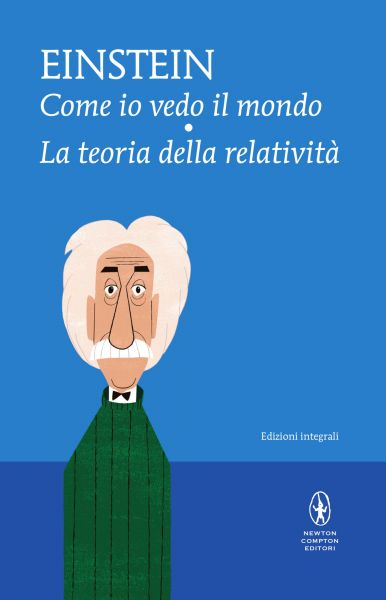
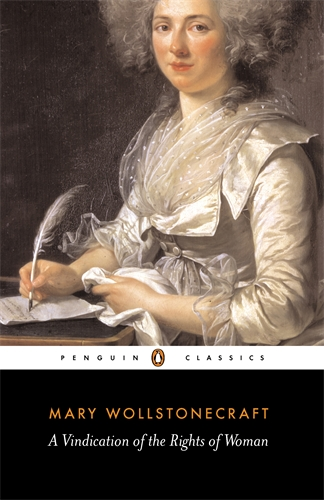
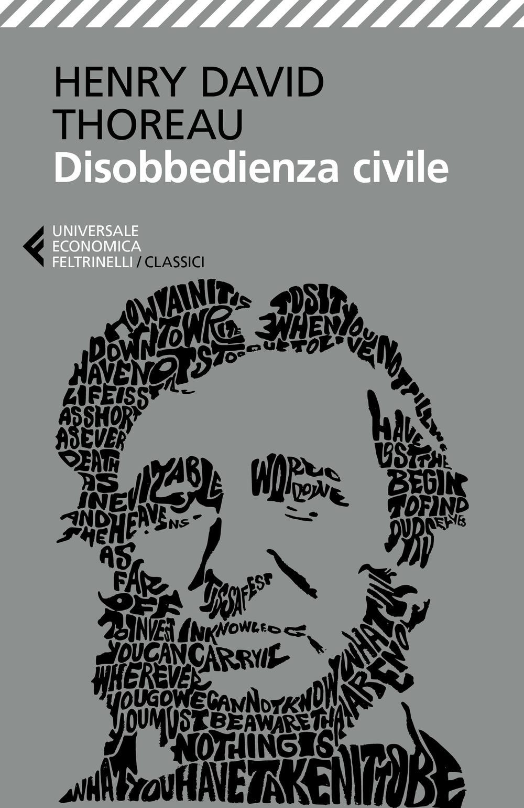
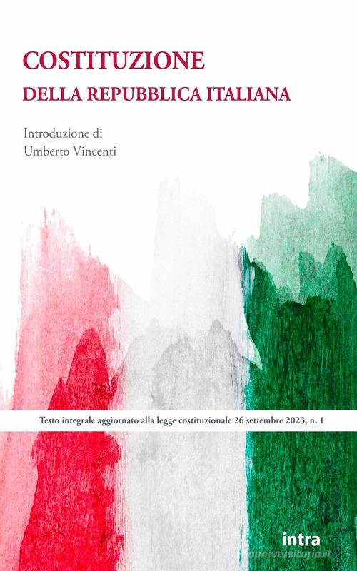
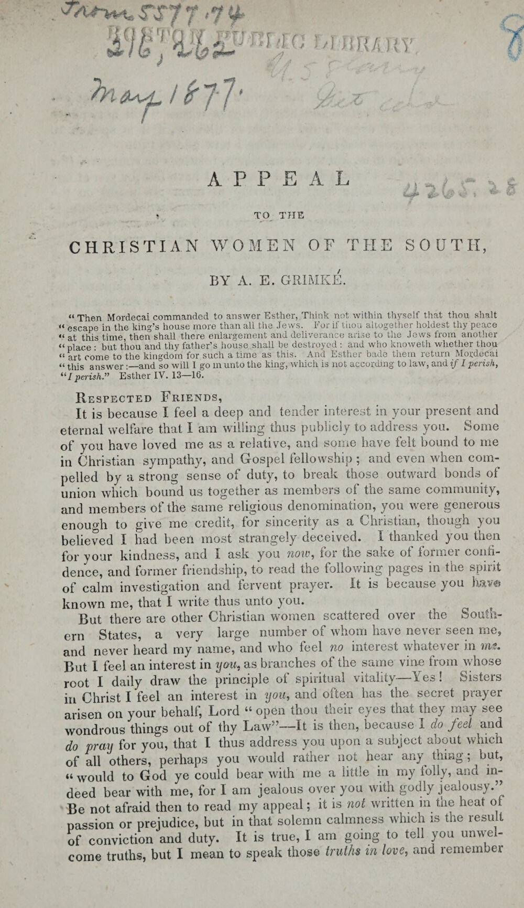
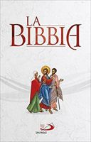
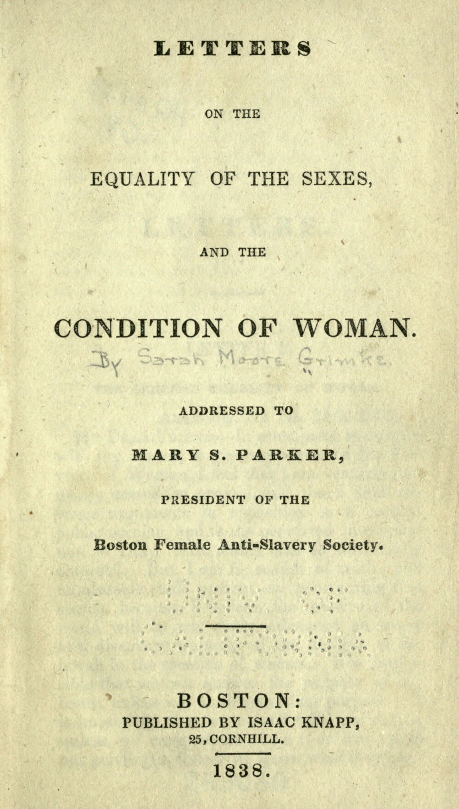
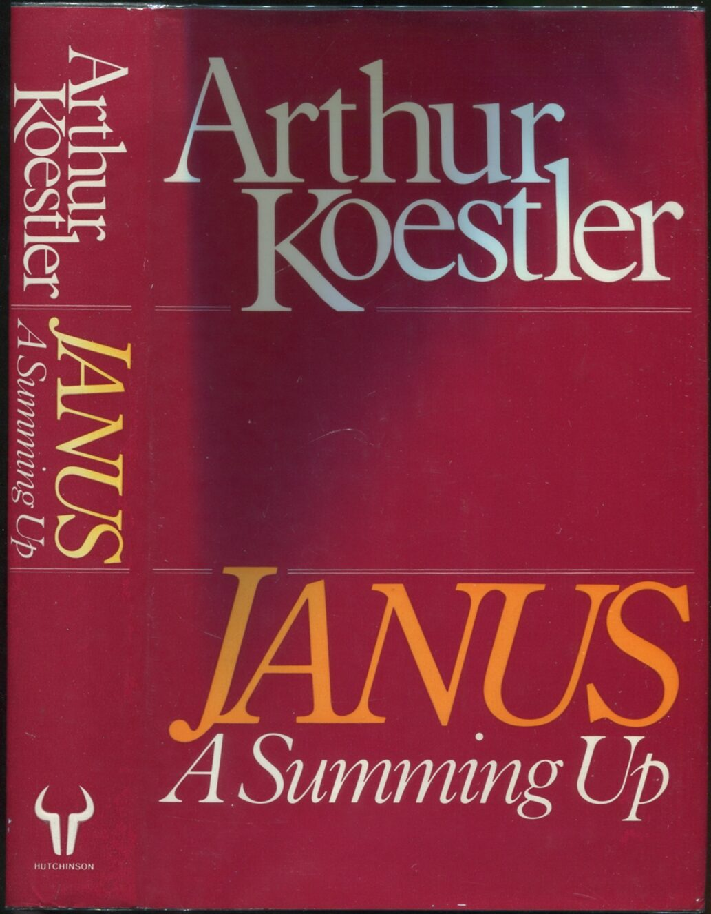
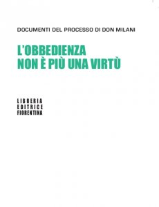
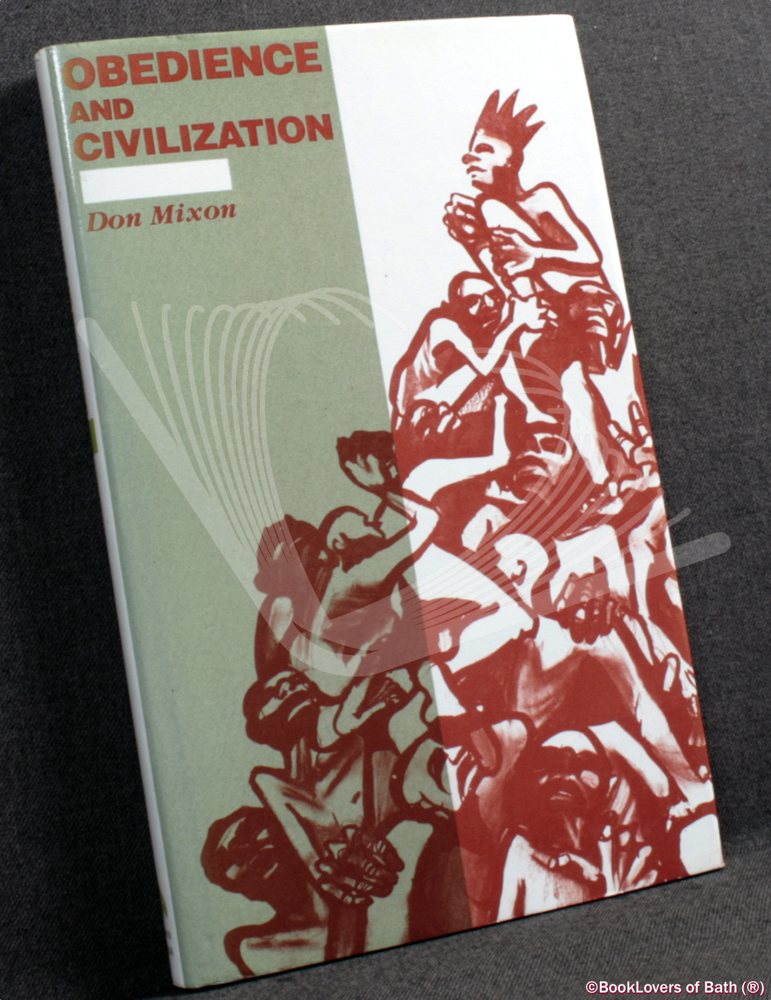

1:04:43 · 14 OPERE
Chi sorveglierà questi sorveglianti?
Il filo del discorso
Il relatore affronta il problema di chi giudichi chi esercita un’autorità attraverso un percorso che unisce Orwell, educazione scientifica, emancipazione e responsabilità personale. La citazione iniziale di 1984 introduce il rischio di un passato riscritto e di una verità fissata dal potere. Da qui nasce una domanda più ampia: quali risorse permettono a una persona di riconoscere e discutere ciò che le viene chiesto di credere o di fare? Dopo alcuni passi attribuiti al blog di Ivano Landi, ad Agamben e a Freccero, il relatore precisa una distinzione centrale: la sua polemica riguarda un uso ideologico della scienza, mentre difende la ricerca come grande forma di conoscenza. La lettera di Einstein a Robert Thornton del 7 dicembre 1944 diventa il suo modello di educazione scientifica: metodologia, storia e filosofia possono sottrarre il ricercatore ai pregiudizi della propria generazione. Il confronto con figure televisive e con Albert Sabin rimane però retorico; l’aspetto di un volto, un’accusa o una credenziale non decidono da soli la validità di un’affermazione. La parte centrale passa dall’autonomia del sapere all’autonomia morale. Mary Wollstonecraft sostiene l’ampliamento della mente delle donne contro l’obbedienza cieca; l’autrice è distinta dalla figlia Mary Shelley. Thoreau richiama la coscienza del cittadino e il rifiuto di farsi agente di ingiustizia. Angelina e Sarah Grimké collegano il contrasto alla schiavitù, l’emancipazione femminile e l’universalità dei diritti. Il loro contesto storico resta riconoscibile anche quando il relatore ne estende le parole ai conflitti contemporanei. Koestler, Lorenzo Milani e Don Mixon permettono poi di interrogare la fedeltà a una causa e la normalizzazione dell’azione ingiusta. Il passo attribuito a Koestler è identificabile probabilmente in Janus; il libro di Mixon, Obedience and Civilization, è invece nominato e letto esplicitamente. Il filo comune è la distanza fra chiamare un’azione dovere e riconoscerne le conseguenze. Le analogie con dittature e persecuzioni, le accuse rivolte a persone pubbliche e i giudizi di incostituzionalità restano posizioni del relatore, senza diventare diagnosi o accertamenti giudiziari. La conclusione cambia registro:Schweitzer, l’incontro con altre persone e la biblioteca rappresentano possibili fonti di fiducia. La leggenda di Astrea e dei fiori diaster trasforma il dolore in un’immagine di bellezza e sensibilità morale. Questa chiusura è simbolica: non attribuisce a un ritratto o alla sola lettura un’efficacia clinica contro la depressione, né certifica come antica una versione mitologica senza fonte identificata.
I libri nel discorso

1984
Copertina: Newton Compton · edizione illustrativa
Titolo 1984 e George Orwell espliciti; lettura e commento dello slogan sul controllo del passato e della verità imposta. La finzione è un ammonimento interpretato dal relatore.
Passaggio 0:11 ↗ · Fonti e libro ↗
Come io vedo il mondo (Mein Weltbild)
Copertina: Newton Compton, volume doppio Come io vedo il mondo – La teoria della relatività, ISBN 9788854191198
Copertina autentica del volume doppio dell’editore: contiene Come io vedo il mondo e La teoria della relatività. Il secondo testo compare nell’immagine, ma non viene contato come opera citata nel filmato. Nessuna edizione specifica è identificata dal solo riferimento orale.
Titolo italiano Come io vedo il mondo pronunciato come esempio di incontro diretto con la voce di uno scienziato. Non vi si attribuisce automaticamente la lettera Thornton letta prima.
Passaggio 25:14 ↗ · Fonti e libro ↗
A Vindication of the Rights of Woman, with Strictures on Political and Moral Subjects
Copertina: Penguin Classics, edizione elettronica 2004, introduzione di Miriam Brody
Copertina autentica Penguin Classics collegata dall’editore all’edizione elettronica 2004. Non è dichiarata la prima edizione del 1792 né l’esemplare mostrato dal relatore.
Titolo, sottotitolo politico-morale e data 1792; due passi di Wollstonecraft sull’ampliamento della mente e sull’obbedienza cieca. L’oscillazione orale fra Wollstonecraft e Mary Shelley è corretta in base al testo.
Passaggio 32:11 ↗ · Fonti e libro ↗
Disobbedienza civile (Civil Disobedience / Resistance to Civil Government)
Copertina: Feltrinelli, Universale Economica I Classici, 25 maggio 2017, 96 pagine, traduzione di Laura Gentili, cura di Franco Meli, ISBN 9788807902635. Il volume comprende anche In difesa del capitano John Brown, non citato autonomamente nel video. Saggio originario del 1849; immagine della edizione italiana di riferimento, non della copia letta.
Immagine autentica dell’opera, controllata visivamente; l’edizione di riferimento non è attribuita al filmato.
Titolo esplicito, data 1849 e lettura di passi sulla coscienza del cittadino e sulla controfrizione quando una legge rende agenti dell’ingiustizia. Non è un consiglio legale contemporaneo.
Passaggio 35:33 ↗ · Fonti e libro ↗
Costituzione della Repubblica Italiana
Copertina dell’edizione Intra aggiornata al 2023: Intra · 2023 · introduzione di Umberto Vincenti
Copertina autentica del testo integrale, aggiornata alla legge costituzionale 26 settembre 2023 n.1. È successiva al filmato del 2019 e non rappresenta la versione storica letta dal relatore. Umberto Vincenti firma l’introduzione.
Le Costituzioni postbelliche d’Italia e Germania sono nominate esplicitamente; nessun articolo viene dichiarato violato sulla sola base del giudizio del relatore.
Passaggio 39:32 ↗ · Fonti e libro ↗Grundgesetz für die Bundesrepublik Deutschland
Copertina dell’edizione Bundestag 2025: Grundgesetz: Deutscher Bundestag, Neuauflage 2025. Testo del 23 maggio 1949 aggiornato al 22 marzo 2025. Copertina integrale dell’opuscolo ufficiale, pagina 1 del PDF.
Copertina grigia con aquila, Deutscher Bundestag, titolo e bollino magenta Neuauflage 2025. Edizione istituzionale di riferimento successiva al video; non una presunta copertina originale 1949.
Riferimento esplicito alla Costituzione postbellica tedesca nel confronto fra diritti e obbedienza; riuso del Grundgesetz senza una nuova edizione inventata.
Passaggio 39:38 ↗ · Fonti e libro ↗
Appeal to the Christian Women of the South
Pagina iniziale con titolo: Prima pagina con titolo dell’Appeal,1836; scansione Boston Public Library
Pagina iniziale autentica dell’opuscolo 1836, foglia 5 della scansione: titolo e firma A.E.Grimké, con timbri e annotazioni del fondo. Non è una copertina editoriale ricostruita.
Titolo tradotto Appello alle donne cristiane del Sud e massima contro l’obbedienza cieca; testo riscontrato nell’opuscolo 1836 di Angelina Emily Grimké.
Passaggio 42:22 ↗ · Fonti e libro ↗
Bibbia
Copertina: San Paolo, 2014 · Nuova Versione dai Testi Antichi · edizione di riferimento
Bibbia e Vangelo richiamati come fonti della coscienza religiosa e abolizionista delle Grimké; nessun titolo evangelico particolare viene dedotto dalla sola menzione generica.
Passaggio 42:27 ↗ · Fonti e libro ↗
The Empty Campus
Copertina: Lulu · edizione inglese di riferimento
Immagine associata all’ISBN di riferimento e controllata visivamente; edizione e traduzione non identificate come quelle citate o lette nel video.
Il relatore dice di avere già commentato una frase nel testo The Empty Campus e ne rende il titolo come università vuota; poi riferisce a quel testo l’aneddoto di Gödel.
Passaggio 43:42 ↗ · Fonti e libro ↗
Letters on the Equality of the Sexes, and the Condition of Woman
Identificazione probabile
Frontespizio: Isaac Knapp, Boston 1838; frontespizio della scansione originale
Frontespizio autentico del volume 1838, foglia 7 della scansione. Non è una copertina esterna; il titolo è identificato dal passo letto, non pronunciato nel filmato.
Sarah Grimké e riconoscimento dei soli diritti umani; titolo non pronunciato, identificazione probabile della lettera XV del 20 ottobre 1837 nella raccolta 1838.
Passaggio 46:43 ↗ · Fonti e libro ↗
Janus: A Summing Up
Identificazione probabile
Copertina: Hutchinson, Londra 1978, ISBN 9780091321000; fotografia della sovraccoperta
Fotografia autentica dell’edizione britannica Hutchinson 1978, copertina e dorso. Il titolo è identificato probabilmente dal passo letto e non viene attribuita al filmato una specifica edizione.
Arthur Koestler nominato e passo sui massacri per devozione a tribù, nazione, dinastia, chiesa o ideologia. Janus non è detto: identificazione probabile dal testo del Prologo, p.14.
Passaggio 48:05 ↗ · Fonti e libro ↗
L’obbedienza non è più una virtù. Documenti del processo di don Milani
Identificazione probabile
Copertina: Copertina ufficiale Libreria Editrice Fiorentina, ISBN 9788889264041, 96 pagine. Titolo verde su fondo bianco e sottotitolo Documenti del processo di don Milani. La scheda editoriale non data una specifica impressione di questa immagine; non è certificata come prima edizione 1965.
Immagine autentica dell’opera, controllata visivamente; l’edizione di riferimento non è attribuita al filmato.
Don Lorenzo Milani e il passo su Norimberga, Gerusalemme e la legge della coscienza: probabile riferimento ai documenti raccolti in L’obbedienza non è più una virtù; titolo del volume non pronunciato.
Passaggio 49:38 ↗ · Fonti e libro ↗
Obedience and Civilization. Authorized Crime and the Normality of Evil
Fotografia della copertina: Pluto Press, Londra e Winchester 1989; fotografia del libro con sovraccoperta
Fotografia autentica della sovraccoperta di un esemplare Pluto Press catalogato 1989 dal libraio; marchio fotografico Book Lovers of Bath conservato. Non è attribuita come la specifica copia del filmato.
Don Mixon, titolo e sottotitolo espliciti, data 1989 e lettura sul crimine che i suoi esecutori considerano lealtà, patriottismo e dovere.
Passaggio 52:19 ↗ · Fonti e libro ↗
La banalità del male. Eichmann a Gerusalemme
Identificazione probabile
Copertina: Feltrinelli · Universale Economica Saggi · 2023
Immagine autentica dell’opera, controllata visivamente; l’edizione di riferimento non è attribuita al filmato.
Il sottotitolo Normality of Evil di Mixon è accostato dal relatore a un testo di Arendt non nominato: identificazione probabile della Banalità del male, distinto dal libro di Mixon.
Passaggio 52:46 ↗ · Fonti e libro ↗